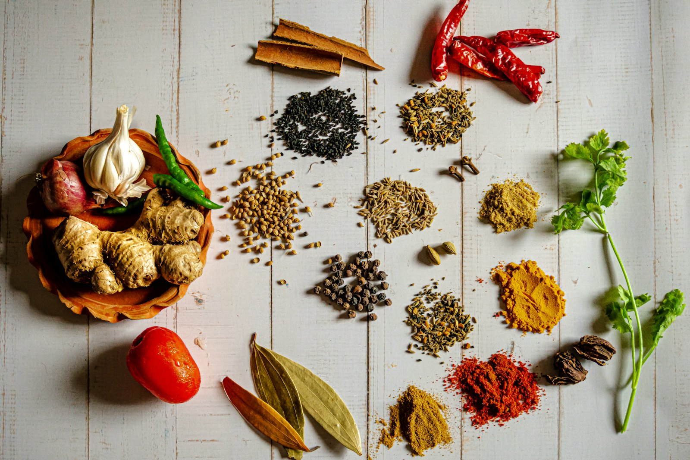

Cover
The drawers behind the counter
Leela Nair · 8 min

The counter is the part customers photograph. Turmeric in a hill, chili in a ribbon, coriander still on the stem. Behind it, the work is drawers. Each drawer is a weight, a price, and a name written in pencil because the supplier changes and the pencil can be rubbed out.
We spent four mornings with the two people who open the shop. They do not grind to order after ten. The grinders run before the shutter comes up, when the street is only delivery bikes and the man who brings ice for the fish shop next door. By the time the first customer asks for a hundred grams of cumin, the jar is already full.
The ledger is a school notebook. One line is the sack that came in, the next is what left in paper twists. At the end of the week the numbers are copied into a book that lives in the back room, on a shelf above the spare grinder. Nobody we asked could remember the book being taken off the premises.
What looks like abundance on the table is a careful poverty in the drawers. They do not keep more than the week will sell. A torn sack of chili is a loss they talk about for days. The color in the photograph is the color of something that has to move.